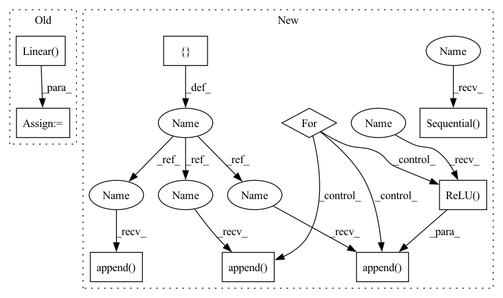

Pattern ID :30121

Before Change
self.fc1 = nn.Linear(self.pose, self.hidden_units[0])
self.fc2 = nn.Linear(self.hidden_units[0], self.hidden_units[1])
self.fc3 = nn.Linear(self.hidden_units[1], self.hidden_units[2])
self.fc4 = nn.Linear(self.hidden_units[2], self.hidden_units[3])
self.fc5 = nn.Linear(self.hidden_units[3], self.hidden_units[4])
self.fc6 = nn.Linear(self.hidden_units[4], self.dof)
def forward(self, x):
After Change
)
print(f"input dimentsions: {self.hidden_units}")
layers = []
input_dim = self.pose
for output_dim in self.hidden_units:
layers.append(nn.Linear(input_dim, output_dim))
layers.append(nn.ReLU())
input_dim = output_dim
layers.append(nn.Linear(input_dim, self.dof))
self.layers = nn.Sequential(*layers)
def forward(self, x):
return self.layers(x)
In pattern: SUPERPATTERN
Frequency: 3
Non-data size: 9
Instances
Fragment ID: 89285574
Project Name: youtalk/iknet-open-manipulator-x
Commit Name: 492ac3f9080782b43c9961a321689afeed47805c
Time: 2021-05-03
Author: yutaka.kondo@youtalk.jp
File Name: iknet.py
M Class Name: IKNet
N Class Name: IKNet
M Method Name: __init__(2)
N Method Name: __init__(2)
M Parent Class: nn.Module
N Parent Class: nn.Module
M File Name: iknet.py
N File Name: iknet.py
M Start Line: 33
M End Line: 46
N Start Line: 33
N End Line: 49
'>
Before Change
print(f"input dimentsions: {self.hidden_units}")
self.fc1 = nn.Linear(self.pose, self.hidden_units[0])
self.fc2 = nn.Linear(self.hidden_units[0], self.hidden_units[1])
self.fc3 = nn.Linear(self.hidden_units[1], self.hidden_units[2])
self.fc4 = nn.Linear(self.hidden_units[2], self.hidden_units[3])
self.fc5 = nn.Linear(self.hidden_units[3], self.hidden_units[4])
self.fc6 = nn.Linear(self.hidden_units[4], self.dof)
After Change
)
print(f"input dimentsions: {self.hidden_units}")
layers = []
input_dim = self.pose
for output_dim in self.hidden_units:
layers.append(nn.Linear(input_dim, output_dim))
layers.append(nn.ReLU())
input_dim = output_dim
layers.append(nn.Linear(input_dim, self.dof))
self.layers = nn.Sequential(*layers)
def forward(self, x):
return self.layers(x)
'>
Fragment ID: 89285575
Project Name: youtalk/iknet-open-manipulator-x
Commit Name: 492ac3f9080782b43c9961a321689afeed47805c
Time: 2021-05-03
Author: yutaka.kondo@youtalk.jp
File Name: iknet.py
M Class Name: IKNet
N Class Name: IKNet
M Method Name: __init__(2)
N Method Name: __init__(2)
M Parent Class: nn.Module
N Parent Class: nn.Module
M File Name: iknet.py
N File Name: iknet.py
M Start Line: 33
M End Line: 46
N Start Line: 33
N End Line: 49
'>
Before Change
self.log_std_max = log_std_max
self.l1 = nn.Linear(in_dim, hidden_dim)
self.l2 = nn.Linear(hidden_dim, hidden_dim)
self.l3 = nn.Linear(hidden_dim, hidden_dim)
self.mean_linear = nn.Linear(hidden_dim, action_dim)
self.mean_linear.weight.data.uniform_(-init_w, init_w)
After Change
self.log_std_min = log_std_min
self.log_std_max = log_std_max
layers = [nn.Linear(in_dim, hidden_dim)]
for l in range(num_layers_linear_hidden):
layers.append(nn.ReLU())
layers.append(nn.Linear(hidden_dim, hidden_dim))
layers.append(nn.ReLU())
self.net = nn.Sequential(*layers)
self.mean_linear = nn.Linear(hidden_dim, action_dim)
self.mean_linear.weight.data.uniform_(-init_w, init_w)
self.mean_linear.bias.data.uniform_(-init_w, init_w)
'>
Fragment ID: 89285573
Project Name: tmdt-buw/karolos
Commit Name: 3246a4ac5a40f6d2e683827d772170fb8b174488
Time: 2020-03-13
Author: timo.thun@ima-ifu.rwth-aachen.de
File Name: agents/nnfactory/sac.py
M Class Name: PolicyNet
N Class Name: PolicyNet
M Method Name: __init__(9)
N Method Name: __init__(8)
M Parent Class: nn.Module
N Parent Class: nn.Module
M File Name: agents/nnfactory/sac.py
N File Name: agents/nnfactory/sac.py
M Start Line: 59
M End Line: 72
N Start Line: 60
N End Line: 84